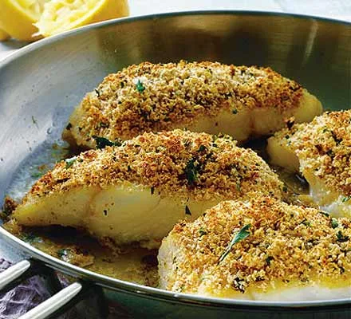

Home
Protein Pancakes

Give white fish a lift with tangy lemon, herbs & Parmesan
Ingredients
- 50g breadcrumb
- 75g oats
- 25g grated parmesan
- 2 tbsp chopped parsley
- salt and pepper
- 4 skinless fillets of firm white fish
- 50g butter
- juice of 1 lemon
Steps
- Mix the breadcrumbs with the grated lemon zest, grated Parmesan, chopped parsley, salt and pepper.
- Season the 4 skinless fish fillets. Pan fry in a little oil for 2-3 minutes until just tender. Turn over and sprinkle with the crumb mixture. Brown in the pan under a hot preheated grill for 2-3 minutes. Add the butter to the pan with the juice of 1 lemon. Melt around the fish and serve.